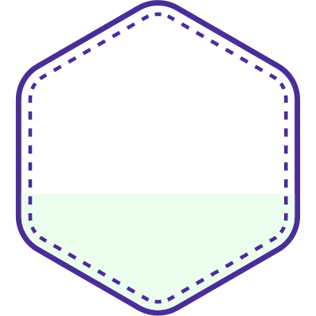
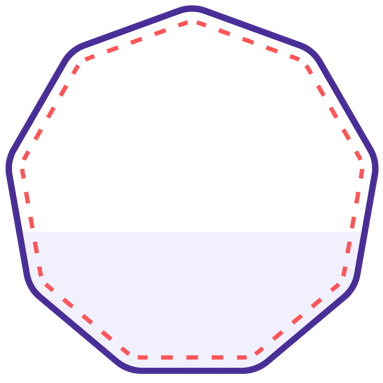

<div class="oeb">
<div class="page-padding">
	<div class="oeb-breadcrumbs">
		<bg-breadcrumbs [linkentries]="breadcrumbLinkEntries"></bg-breadcrumbs>
	</div>
	<div class="oeb-section-sm">
		<div class="oeb-headline-container-sm">
			<h1 hlmH1 class="tw-text-purple tw-font-black">
				{{ 'Issuer.createBadge' | translate }}
			</h1>
		</div>
		<div class="tw-flex tw-flex-col tw-text-oebblack">
			<p hlmP class="tw-font-normal md:!tw-leading-[31.2px]">
				Wir helfen dir, in wenigen Schritten deinen Badge zu erstellen.<br>
				<strong>Los geht's!</strong>
			</p>

		</div>

		<div class="section tw-text-oebblack tw-mt-6">

			<h2 hlmH2 class="tw-font-bold tw-mb-6">1. Badge-Kategorie wählen</h2>

			<div class="tw-flex tw-justify-evenly oeb-badgeclass-select-container tw-flex-col md:tw-flex-row">

				<a
					[routerLink]="['/issuer/issuers', issuerSlug, 'badges', 'create', 'participation']"
				>
					
					<strong>Teilnahme-Badge</strong>
					<p>
						dient als Bestätigung der Teilnahme an einer Veranstaltung – er enthält <u>keine</u> Kompetenzen.
					</p>
				</a>
				<a
					[routerLink]="['/issuer/issuers', issuerSlug, 'badges', 'create', 'competency']"
				>
					
					<strong>Kompetenz-Badge</strong>
					<p>kann (mithilfe unseres KI-Assistenten) mit den Kompetenzen gefüllt werden, die deine Lernenden erwerben.</p>
				</a>
				<a
					[routerLink]="['/issuer/issuers', issuerSlug, 'learningpaths', 'create']"
				>
					

					<strong>Micro Degree</strong>
					<p>verbindet mehrere Badges zu einer größeren Lerneinheit. Wenn Lernende alle Badges dieses „Lernpfades” erworben haben, erhalten sie automatisch den Abschluss Micro Degree.</p>
				</a>

			</div>
		</div>
	</div>
</div>
</div>
